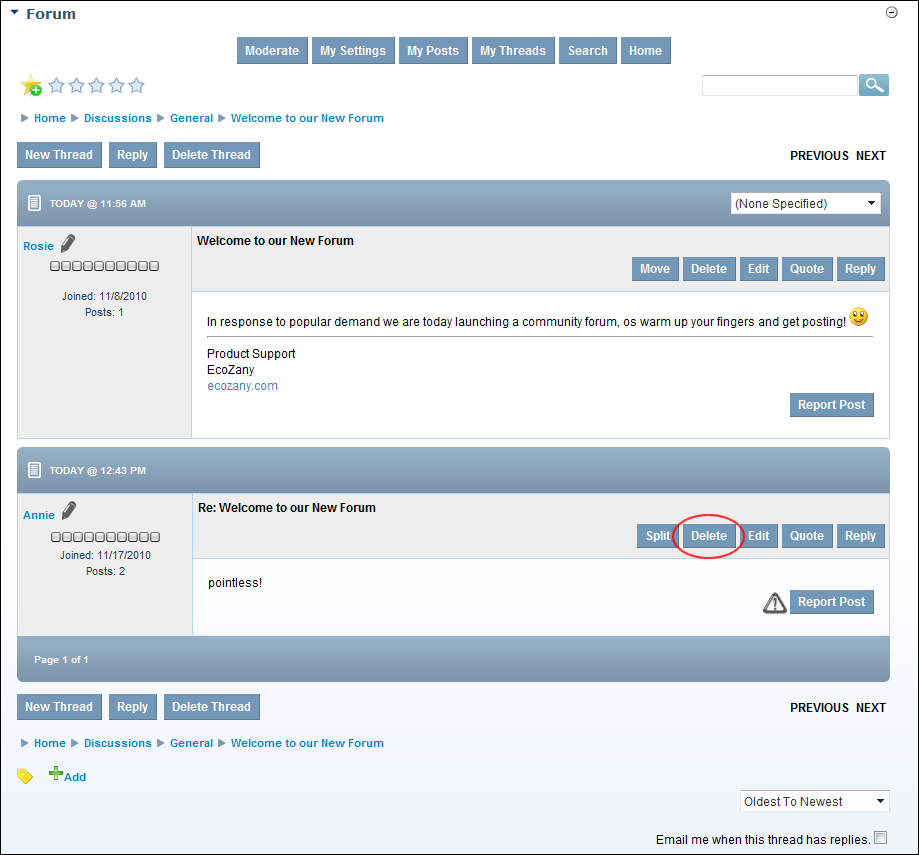
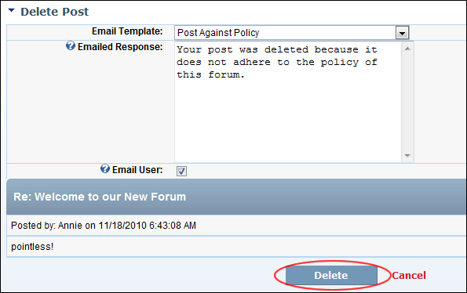

Deleting a Forum Post
How authorized users can permanently delete a post from the Forum module.
- Locate and open the required post. See "Viewing any Post"
- Click the Delete link located to the right of the post title.

- Optional. Complete this step to send email notification to the poster that this post has been deleted:
- At Email Template, select the reason why the post is being deleted.
- Optional. In the Emailed Response, edit the message to be emailed to the poster.
- At Email User, to email the poster.
- Click the Delete link. This displays the message "Are You Sure You Wish To Delete This Item?"
-
Click the OK button to confirm.

Deleting a Post